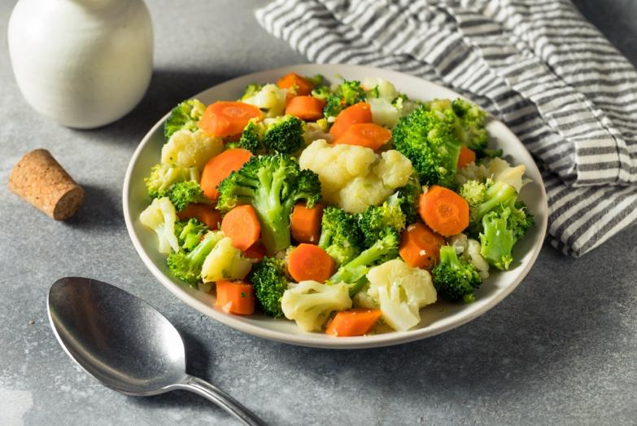

Eating well is very important when you are being treated with chemotherapy. Good nutrition can help your body stay strong and give you energy. It may also help your body heal and fight infections. Eating small, frequent meals can help keep your strength up throughout the day.
Drinking enough fluids is important, too. Water, juice, and broths keep you hydrated and help your body get rid of waste. Staying hydrated can help ease chemo side effects like dry mouth, weakness, and dizziness.
Chemotherapy treatment is hard, physically and emotionally. This guide will give you some information on how to make nutrition work for you during this time. Ask your care team any questions you have. We are here to support you in any way we can.
Some foods can make side effects worse or cause infections. Avoid:
Undercooked or raw foods, like raw fish or foods with raw eggs
Unwashed vegetables
Moldy, spoiled, or raw dairy products
Soft cheeses
Foods that are hard to chew, like very crunchy or tough foods
Very spicy or very acidic foods, if they cause mouth pain or stomach upset
Choose foods that are gentle and nourishing:
Soft fruits like bananas, applesauce, and peaches
Cooked vegetables like carrots, squash, and green beans
Lean meats, eggs, and fish that are cooked well
Whole grains like oatmeal and rice
Dairy or dairy-free alternatives that are easy to swallow
Check with your oncologist about any over-the-counter supplements or nutritional aids. Some may have effects on your treatment.

Chemotherapy can weaken your immune system. This makes it harder for your body to fight off germs that can cause illness. Practicing food safety helps protect you from getting sick while your body is healing. To stay safe:
Wash your hands before preparing or eating food.
Use clean utensils and cutting boards.
Keep raw foods separate from cooked foods to prevent the spread of germs.
Cook foods thoroughly, especially meats and eggs.
Store food properly in the refrigerator or freezer.
Avoid leftovers that have been out too long or look or smell bad.
When eating at restaurants, choose soft, easy-to-chew foods. Avoid raw or undercooked foods and dishes that are very spicy or fried. It is best to ask for food to be cooked thoroughly and prepared in a way that avoids stomach upset or mouth pain.
Call your care team if you have:
Loss of appetite or trouble eating
Mouth sores that do not heal or cause pain
Frequent nausea, vomiting, or diarrhea
Signs of dehydration, such as a very dry mouth or dark urine
New or worsening side effects related to your diet
Good nutrition is an important part of your care during chemotherapy. Eating well can help your body stay strong, support healing, and manage side effects. Everyone has different needs, so do not hesitate to ask your care team for help with meal planning, hydration tips, or finding foods that feel easier to eat. Together, we can find a plan that is best for you.
Thank you for trusting us with your care. We are here to support you and want you to feel your best. Contact us with any questions.
IF YOU HAVE A MEDICAL EMERGENCY, CALL 911 OR GO TO THE EMERGENCY ROOM.
The information presented is intended for general information and educational purposes. It is not intended to replace the advice of your health care provider. Contact your health care provider if you believe you have a health problem.
Last updated May 2025
© 2025 Mytonomy, Inc. All rights reserved.